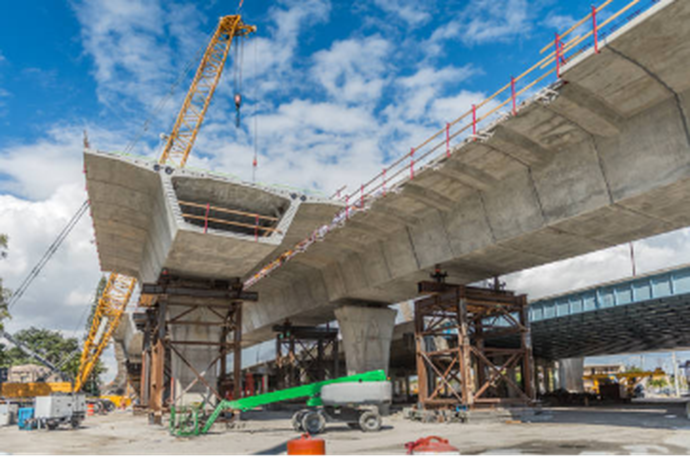
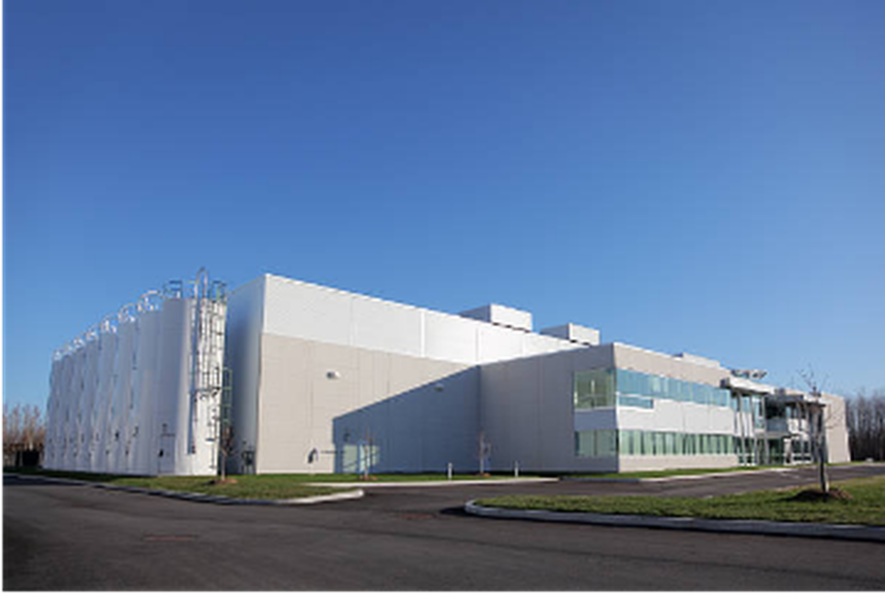

Building & Structures
High-rise apartments, structural consultancy, testing, surveys and project supervision.
Our consultancy capabilities can support building, infrastructure, industrial, commercial and technical investigation requirements.
High-rise apartments, structural consultancy, testing, surveys and project supervision.

Surveying, investigation, quality supervision and project documentation.

Site development, planning, utilities and technical survey support.

Industrial facilities, commercial projects and technical quality support.

Drone, DGPS/GPS, total station, hydrographic and topographical surveys.

Laboratory and NDT services for construction material and structural assessment.